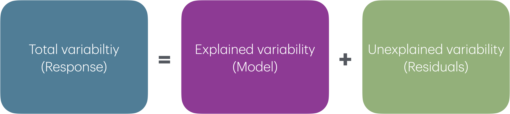

# load packages
library(tidyverse)
library(tidymodels)
library(patchwork)
library(knitr)
library(kableExtra)
# set default theme and larger font size for ggplot2
ggplot2::theme_set(ggplot2::theme_bw(base_size = 20))Model comparison
Announcements
Lab 02 due TODAY at 11:59pm
HW 02 due Tuesday, February 11 at 11:59pm
Lecture recordings available until start of exam on February 18
- See link on menu of course website
Statistics experience due Tuesday, April 15
Topics
- ANOVA for multiple linear regression and sum of squares
- Comparing models with \(Adj. R^2\)
- Occam’s razor and parsimony
- Cross validation
Computational setup
Introduction
Data: Restaurant tips
Which variables help us predict the amount customers tip at a restaurant? To answer this question, we will use data collected in 2011 by a student at St. Olaf who worked at a local restaurant.
# A tibble: 169 × 4
Tip Party Meal Age
<dbl> <dbl> <chr> <chr>
1 2.99 1 Dinner Yadult
2 2 1 Dinner Yadult
3 5 1 Dinner SenCit
4 4 3 Dinner Middle
5 10.3 2 Dinner SenCit
6 4.85 2 Dinner Middle
7 5 4 Dinner Yadult
8 4 3 Dinner Middle
9 5 2 Dinner Middle
10 1.58 1 Dinner SenCit
# ℹ 159 more rowsVariables
Predictors:
Party: Number of people in the partyMeal: Time of day (Lunch, Dinner, Late Night)Age: Age category of person paying the bill (Yadult, Middle, SenCit)Payment: Payment type (Cash, Credit, Credit/CashTip)
Response: Tip: Amount of tip
Response: Tip

Predictors

Relevel categorical predictors
tips <- tips |>
mutate(
Meal = fct_relevel(Meal, "Lunch", "Dinner", "Late Night"),
Age = fct_relevel(Age, "Yadult", "Middle", "SenCit")
)Predictors, again

Response vs. predictors

Fit and summarize model
tip_fit <- linear_reg() |>
set_engine("lm") |>
fit(Tip ~ Party + Age, data = tips)
tidy(tip_fit) |>
kable(digits = 3)| term | estimate | std.error | statistic | p.value |
|---|---|---|---|---|
| (Intercept) | -0.170 | 0.366 | -0.465 | 0.643 |
| Party | 1.837 | 0.124 | 14.758 | 0.000 |
| AgeMiddle | 1.009 | 0.408 | 2.475 | 0.014 |
| AgeSenCit | 1.388 | 0.485 | 2.862 | 0.005 |
. . .
Is this model useful for explaining variation in tips?
RMSE
\[ RMSE = \sqrt{\frac{\sum_{i=1}^n(y_i - \hat{y}_i)^2}{n}} = \sqrt{\frac{\sum_{i=1}^ne_i^2}{n}} \]
Ranges between 0 (perfect predictor) and infinity (terrible predictor)
Same units as the response variable
The value of RMSE is more useful for comparing across models than evaluating a single model
Analysis of variance (ANOVA)
Analysis of Variance (ANOVA): Technique to partition variability in Y by the sources of variability

ANOVA
- Main Idea: Decompose the total variation in the response into
the variation that can be explained by the each of the variables in the model
the variation that can’t be explained by the model (left in the residuals)
- If the variation that can be explained by the variables in the model is greater than the variation in the residuals, this signals that the model might be “valuable” (at least one of the \(\beta\)’s not equal to 0)
Sum of Squares
\[ \begin{aligned} \color{#407E99}{SST} \hspace{5mm}&= &\color{#993399}{SSM} &\hspace{5mm} + &\color{#8BB174}{SSR} \\[10pt] \color{#407E99}{\sum_{i=1}^n(y_i - \bar{y})^2} \hspace{5mm}&= &\color{#993399}{\sum_{i = 1}^{n}(\hat{y}_i - \bar{y})^2} &\hspace{5mm}+ &\color{#8BB174}{\sum_{i = 1}^{n}(y_i - \hat{y}_i)^2} \end{aligned} \]
Click here to see why this equality holds.
\(R^2\)
The coefficient of determination \(R^2\) is the proportion of variation in the response, \(Y\), that is explained by the regression model
. . .
\[ R^2 = \frac{SSM}{SST} = 1 - \frac{SSR}{SST} = 1 - \frac{686.44}{1913.11} = 0.641 \]
Model comparison
Two potential models
Let’s consider two models:
- Model 1:
Party,Age - Model 2:
Party,Age,Payment
. . .
R-squared, \(R^2\)
\(R^2\) will always increase as we add more variables to the model (let’s see why)
If we add enough variables, we can always achieve \(R^2=100\%\)
If we only use \(R^2\) to choose a best fit model, we will be prone to choose the model with the most predictor variables (assuming we’re comparing nested models)
Adjusted \(R^2\)
- Adjusted \(R^2\): measure that includes a penalty for unnecessary predictor variables
- Similar to \(R^2\), it is a measure of the amount of variation in the response that is explained by the regression model
- Differs from \(R^2\) by using the mean squares (sumsq/df) rather than sums of squares and therefore adjusting for the number of predictor variables
- The penalty for added model complexity attempts to strike a balance between underfitting (too few predictors in the model) and overfitting (too many predictors in the model)
- Goal: Parsimony
\(R^2\) and Adjusted \(R^2\)
\[R^2 = \frac{SSM}{SST} = 1 - \frac{SSR}{SST}\]
. . .
\[Adj. R^2 = 1 - \frac{SSR/(n-p-1)}{SST/(n-1)}\]
where
\(n\) is the number of observations used to fit the model
\(p\) is the number of terms (not including the intercept) in the model
Using \(R^2\) and Adjusted \(R^2\)
- Adjusted \(R^2\) can be used as a quick assessment to compare the fit of multiple models; however, it should not be the only assessment!
- Use \(R^2\) when describing the relationship between the response and predictor variables
Comparing models with \(Adj. R^2\)
tip_fit_1 <- lm(Tip ~ Party + Age ,
data = tips)
glance(tip_fit_1) |>
select(r.squared, adj.r.squared)# A tibble: 1 × 2
r.squared adj.r.squared
<dbl> <dbl>
1 0.641 0.635tip_fit_2 <- lm(Tip ~ Party + Age + Payment,
data = tips)
glance(tip_fit_2) |>
select(r.squared, adj.r.squared)# A tibble: 1 × 2
r.squared adj.r.squared
<dbl> <dbl>
1 0.644 0.633- Which model would we choose based on \(R^2\)?
- Which model would we choose based on Adjusted \(R^2\)?
Parsimony and Occam’s razor
The principle of parsimony is attributed to William of Occam (early 14th-century English nominalist philosopher), who insisted that, given a set of equally good explanations for a given phenomenon, the correct explanation is the simplest explanation1
Called Occam’s razor because he “shaved” his explanations down to the bare minimum
Parsimony in modeling:
- models should have as few parameters as possible
- linear models should be preferred to non-linear models
- experiments relying on few assumptions should be preferred to those relying on many
- models should be pared down until they are minimal adequate
- simple explanations should be preferred to complex explanations
In pursuit of Occam’s razor
Occam’s razor states that among competing hypotheses that predict equally well, the one with the fewest assumptions should be selected
Model selection follows this principle
We only want to add another variable to the model if the addition of that variable brings something valuable in terms of predictive power to the model
In other words, we prefer the simplest best model, i.e. parsimonious model
Alternate views
Sometimes a simple model will outperform a more complex model . . . Nevertheless, I believe that deliberately limiting the complexity of the model is not fruitful when the problem is evidently complex. Instead, if a simple model is found that outperforms some particular complex model, the appropriate response is to define a different complex model that captures whatever aspect of the problem led to the simple model performing well.
Radford Neal - Bayesian Learning for Neural Networks2
Evaluating models: training vs. testing sets
The training set (i.e., the data used to fit the model) does not have the capacity to be a good arbiter of performance.
It is not an independent piece of information; predicting the training set can only reflect what the model already knows.
Suppose you give a class a test, then give them the answers, then provide the same test. The student scores on the second test do not accurately reflect what they know about the subject; these scores would probably be higher than their results on the first test.
We can reserve some data for a testing set that can be used to evaluate the model performance
Training and testing sets
Create training and testing sets using functions from the resample R package (part of tidymodels)
Step 1: Create an initial split:
set.seed(210)
tips_split <- initial_split(tips, prop = 0.75) #prop = 3/4 by default. . .
Step 2: Save training data
tips_train <- training(tips_split)
dim(tips_train)[1] 126 13. . .
Step 3: Save testing data
tips_test <- testing(tips_split)
dim(tips_test)[1] 43 13Application exercise
Recap
- ANOVA for multiple linear regression and sum of squares
- Comparing models with
- \(R^2\) vs. \(Adj. R^2\)
- AIC and BIC
- Occam’s razor and parsimony
- Training and testing data